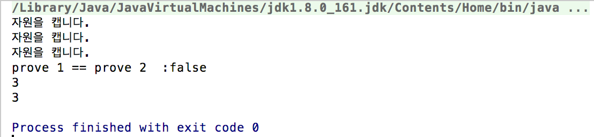

package DesignPattern.gof_prototype;
public class Battle {
public static void main(String[] args) {
Unit prove1 = Nexus.createProve();
prove1.Harvest();
prove1.Harvest();
prove1.Harvest();
Arbiter arbiter1 = new Arbiter();
Unit prove2 = arbiter1.copyRealUnit(prove1);
System.out.println("prove 1 == prove 2 의 결과 : " + (prove1 == prove2) );
System.out.println(prove1.getMineralCapacity());
System.out.println(prove2.getMineralCapacity());
}
}
컴파일 결과

Deep Copy / Shallow Copy
코드 예제
package DesignPattern.gof_prototype;
public interface Unit{
public void Harvest();
public void Attack();
public void Building();
public Unit CloneUnitOrNull();
public int getMineralCapacity();
}
package DesignPattern.gof_prototype;
public class Probe implements Unit{
private int mineralCapacity = 0;
public void Harvest(){
System.out.println("자원을 캡니다.");
mineralCapacity += 1;
}
public void Attack(){
System.out.println("공격을 합니다.");
}
public void Building(){
System.out.println("건물을 짓습니다.");
}
public int getMineralCapacity(){
return mineralCapacity;
}
private void setCapacity(int capacity){
this.mineralCapacity = capacity;
}
public Unit CloneUnitOrNull(){
try {
Object cloneObject = clone();
return (Unit)cloneObject;
}catch (CloneNotSupportedException e){
e.printStackTrace();
return null;
}
}
@Override
public Object clone() throws CloneNotSupportedException{
Probe probe = new Probe();
probe.setCapacity(mineralCapacity);
return probe;
}
}
package DesignPattern.gof_prototype;
public class Nexus {
public static Unit createProve(){
return new Probe();
}
}
package DesignPattern.gof_prototype;
public class Arbiter {
public Unit copyRealUnit(Unit unit){
return unit.CloneUnitOrNull();
}
}
Cloneable의 Clone 자체를 이용할 경우
package DesignPattern.gof_prototype.sample002;
import java.util.List;
public class ComplexProcess implements Cloneable {
private final Process complexProcess;
public ComplexProcess(Process complexProcess){
this.complexProcess = complexProcess;
}
public List<Object> getProcessResult(){
return complexProcess.getResultOfComplexProcess();
}
public ComplexProcess getCloneProcess() throws CloneNotSupportedException {
return (ComplexProcess)super.clone();
}
}
package DesignPattern.gof_prototype.sample002;
import java.util.ArrayList;
import java.util.List;
public class CopyAthousandRowsProcess implements Process {
public List<Object> getResultOfComplexProcess() {
return new ArrayList<>();
}
}
package DesignPattern.gof_prototype.sample002;
import java.util.List;
public interface Process {
public List<Object> getResultOfComplexProcess();
}
package DesignPattern.gof_prototype.sample002;
public class Processor {
public static void main(String[] args) throws CloneNotSupportedException {
ComplexProcess complexProcess1 = new ComplexProcess(new CopyAthousandRowsProcess());
complexProcess1.getProcessResult();
ComplexProcess complexProcess2 = complexProcess1.getCloneProcess();
complexProcess2.getProcessResult();
System.out.println("complexProcess1 == complexProcess1 의 결과는 " + (complexProcess1 == complexProcess2));
}
}